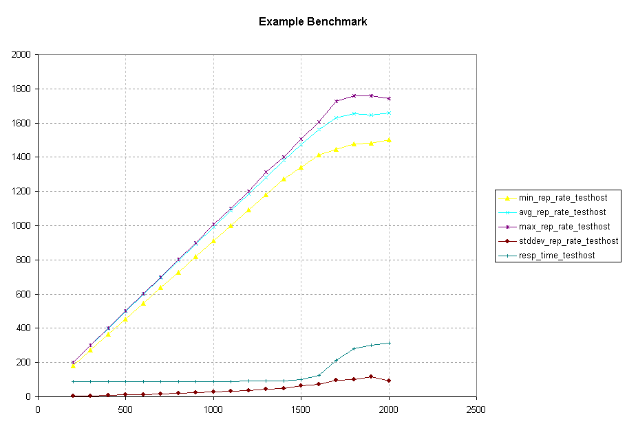

Autobench is a simple Perl script for automating the process of benchmarking a web server (or for conducting a comparative test of two different web servers). The script is a wrapper around httperf. Autobench runs httperf a number of times against each host, increasing the number of requested connections per second on each iteration, and extracts the significant data from the httperf output, delivering a CSV or TSV format file which can be imported directly into a spreadsheet for analysis/graphing.
Also included in the autobench tarball is a short program 'crfile' that can be used to generate files of arbitrary lengths, filled with random characters.
In its simplest mode, Autobench can be used to benchmark a single server. For example, the command line below:
autobench --single_host --host1 www.test.com --uri1 /10K --quiet \
--low_rate 20 --high_rate 200 --rate_step 20 --num_call 10 \
--num_conn 5000 --timeout 5 --file results.tsv
Will benchmark "http://www.test.com/10K", with a series of tests starting at 20 connections per second (with 10 requests per connection), and increasing by 20 connections per second until 200 connections a second are being requested. Each test will comprise a total of 5000 connections, and any responses which take longer than 5 seconds to arrive will be counted as errors. The results will be saved in the file 'results.tsv'.
This file can then be imported into a spreadsheet or graphing package for analysis. Graphs drawn using autobench output for a test conducted with the command line above are presented below. The autobench output file from which the graphs were drawn can be found here:
Included with Autobench 1.1.0 (and later) is a program to generate graphs with gnuplot from an Autobench results file. See the bench2graph man page for details.
Here we can see that the web server under test became saturated at around 1600 requests per second (160 connections per second, since 10 requests are sent down each connection).
Autobench also allows you to conduct tests against two machines (to compare the performance of different hardware or different web server software packages, for example). To do so, omit the '--single_host' option and specify '--host2' and '--uri2':
autobench --host1 www.test.com --uri1 /10K \
--host2 www2.test.com --uri2 /10K \
--file results.tsv
Note that in this case the other options (rates, number of connections, etc.) will be taken from the configuration file. This will produce a TSV file containing the results for both hosts (ordered by the demanded number of requests per second).
Since autobench takes a large number of different options, which, in practice, typically won't vary a great deal, it allows you to specify defaults for the majority of options in a configuration file $HOME/.autobench.conf. The first time you run autobench, it will merely install this configuration file and exit. Thereafter it will run normally. Any options specified on the command line override those in the configuration file.
Autobench version 2.0.0 introduced "Distributed Autobench" - a means of conducting automated benchmarks using two or more client machines against the same server. Distributed autobench comprises two programs, autobenchd and autobench_admin. autobenchd is a daemon, a copy of which should be installed on each of the client machines. It listens on port 4600 (or other port specified on the command line) for instructions from autobench_admin which is used for controlling the cluster of test servers.
autobench_admin takes the same arguments as the original autobench, but instead of running the benchmark itself, contacts the set of daemons specified using the --clients option, and instructs them all to benchmark the target web server simultaneously. autobench_admin collates the results, and presents them in the same format as autobench, for importation into a spreadsheet, or graphing using bench2graph. Full details of the use and configuration of autobench_admin and autobenchd are given in their respective man pages - the following is an example of the use of autobench_admin:
autobench_admin --single_host --host1 www.bar.com --uri1/index.html \
--clients test1.foo.com:4600,test2.foo.com:4600,test3.foo.com:4600 \
--file bench.tsv
This conducts a benchmark against the machine www.bar.com from the three clients test1 through test3.foo.com, recording the results in the file bench.tsv. In this case, the total number of connections to send, the low and high rates, and the rate step will all be read from the configuration file, since they aren't specified on the command line.
HTML Copies of the man pages for autobench and crfile may be found at the following links:
Further examples of the use of Autobench are included in the Linux HTTP Benchmarking HOWTO.
autobench is Free Software, and is distributed under the terms
of the GNU Public Licence.
All downloads below are stable. The '.asc' files are GPG/PGP
signatures of the tarballs, made with my GPG key, ID
0xBCC7863F.
Latest is 2.1.2: